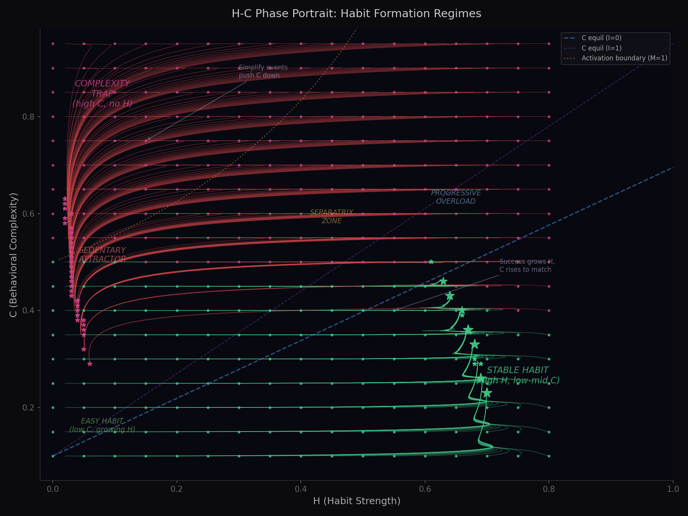

H-M-E-I-C State Space Model with Literature-Grounded Dynamics
This model treats habit formation as a trajectory through a 5-dimensional state space. Success and failure emerge from the geometry of the space -- stable attractors (sedentary, established habit) separated by a separatrix. Your trajectory depends on starting conditions, life events, and crucially, the complexity of the behavior you're attempting.
The core thesis: Start with the simplest possible version of the behavior. This keeps you below the separatrix, allowing habit strength to accumulate even as motivation naturally decays. Once automaticity is established, complexity can gradually increase.
Ranges from H_min = 0.02 (no habit, but a residual trace) to 1.0 (fully automatic). Grows asymptotically -- early repetitions matter most, with diminishing returns. Median time to 95% plateau: 66 days (range 18-254). Lally et al. (2010)
As H grows, behavior shifts from needing conscious effort (M-driven) to being triggered automatically by environmental cues. This is the goal-directed → habitual transition.
The fast variable (hours-days). Ranges from 0 (no motivation) to ~4 (maximum, e.g. after a health scare). Decays hyperbolically -- steep initial drop, long tail. This means a burst of motivation after a New Year's resolution fades quickly in the first week, then slowly over months. Steel & Konig (2006)
Positive E = expectations exceed reality ("where are my results?"). Negative E = expectations have been recalibrated downward. E drives two catastrophic failure modes (see dynamics below).
The slowest variable (months-years). Only grows when behavior is both occurring AND habitual. Once established, provides a restoring force on M and raises the habit ceiling. The strongest predictor of long-term maintenance (d = 0.73). Rhodes et al. (2016); Berkman et al. (2017)
Dynamic -- adapts based on feedback. Failure pushes C down (learning to simplify); success pushes it up (progressive overload). Finds an equilibrium proportional to H.
| Person | Who | H0 | M0 | E0 | I0 | C0 |
|---|---|---|---|---|---|---|
| Sarah | 23, grad student, anxious | 0.02 | 0.6 | 0.3 | 0.0 | 0.3 |
| Marcus | 26, startup eng, ex-lifter | 0.05 | 1.2 | 0.8 | 0.1 | 0.7 |
| Carlos | 42, teacher/coach, runner identity | 0.65 | 0.4 | -0.2 | 0.7 | 0.5 |
| Aisha | 33, ICU nurse, night shift | 0.02 | 0.5 | 0.2 | 0.0 | 0.3 |
| Tom | 40, remote writer, sedentary | 0.02 | 0.4 | 0.1 | 0.0 | 0.2 |
| Sam | 19, freshman, Reddit PPL split | 0.02 | 2.0 | 2.0 | 0.0 | 0.9 |
| Lisa | 37, post-divorce, CrossFit | 0.02 | 1.8 | 1.2 | 0.0 | 0.7 |
| Helen | 62, retired, Silver Sneakers | 0.02 | 0.8 | 0.2 | 0.0 | 0.3 |
Green = favorable for success. Red = unfavorable (high C, high E = unrealistic expectations). Notice Sam's C=0.9 with E=2.0 -- classic complexity overshoot with inflated expectations.
dH/dt = alpha_H × B × (A(I) - H) - decay_rate × (1 - B) × (H - H_min)
(A(I) - H) — the diminishing returns factor. As H approaches the ceiling, growth slows. First weeks of habit formation produce the most automaticity per repetition.(1 - B) — decay only occurs when behavior is NOT happening. If B=1 (exercising daily), there's zero decay.Motivation is shaped by many competing forces. Events (shocks, lapses, stress) are applied as impulses -- instantaneous jumps in M -- not through these rate equations.
/ (1 + M) makes this hyperbolic:
at high M (e.g. 2.0 after a health scare), decay is fast (~0.1/day); at low M (e.g. 0.2),
decay slows to ~0.025/day. This produces the classic pattern: motivation crashes in the first
week, then lingers for months as a low hum.
Steel & Konig (2006)
(1 - H²) — novelty factor. New behavior is exciting and rewarding. As H→1 (fully habitual), the reward signal vanishes. Going to the gym for the first time produces a dopamine hit; going for the 500th time doesn't.
Schultz (2016) -- reward prediction error(1 - M/2) — saturation. When M is already high, reward has diminishing marginal utility. You can't get more motivated when you're already at peak motivation.C × (1 - H) — effort scales with complexity AND inversely with habit strength. A complex behavior (C=0.8) that isn't habitual yet (H=0.1) costs 0.8 × 0.9 = 0.72 units of effort. A simple behavior (C=0.2) that's somewhat habitual (H=0.4) costs 0.2 × 0.6 = 0.12. This is why high C is devastating early on.
Kurzban et al. (2013) -- effort as opportunity cost(1 - H) — state-dependent toxicity. At low H, indulgence is maximally damaging because behavior depends entirely on M. At high H, behavior is cue-driven so fantasy can't substitute for it.
Kappes & Oettingen (2011)softplus is a smooth ramp: zero when E > E_crit, then grows linearly.(1-H) — stress mainly impairs goal-directed behavior. Highly habitual behavior is less affected.
Schwabe & Wolf (2009)(1 - 0.3×social) — social support buffers stress. With social_support=1.0 (strong gym community), the stress drain is reduced by 30%.These aren't tuned per person -- they're the same model parameters. What differs is the event rates that determine how often each person encounters stress, support, etc.
| Person | Stress rate (events/day) | Social rate | Lapse vuln | Typical trajectory |
|---|---|---|---|---|
| Tom (remote writer) | 0.04 | 0.005 | 0.5 | Low stress, low C=0.2 → 60% habit formed |
| Helen (retiree) | 0.02 | 0.05 | 0.3 | Lowest stress, strong social → 48% habit formed |
| Carlos (coach) | 0.05 | 0.05 | 0.25 | Low lapse vuln, but injury risk → 14% (injuries derail) |
| Sarah (grad student) | 0.08 | 0.01 | 0.6 | Moderate stress, low social → 17% habit formed |
| David (new dad) | 0.10 | 0.02 | 0.6 | Young kids = constant stress → 3% habit formed |
| Aisha (ICU nurse) | 0.15 | 0.01 | 0.7 | Extreme stress, isolated → 1% habit formed |
| Marcus (startup) | 0.10 | 0.03 | 0.5 | High stress + C=0.7 → 0% (needs simplify event) |
| Sam (freshman) | 0.07 | 0.05 | 0.7 | C=0.9, E=2.0 → 0% (classic complexity trap) |
Event impulses add directly to E (shocks inflate expectations; lapses spike them).
dI/dt = alpha_I × B × H × (1 - I) - delta_I × (1 - B) × I
C adapts toward an equilibrium determined by current habit strength:
C_equil = C_min + (C_max - C_min) × H × (0.7 + 0.3 × I)
When H=0, C_equil = 0.1 (simplest possible). When H=0.7 with I=0.5, C_equil ≈ 0.61. You can sustain complexity proportional to your automaticity.
max(0, 0.3 - B) means: if you're actually doing the behavior, C doesn't drop even if
it's above equilibrium. If it's working, don't fix it.
B is computed from two competing systems, reflecting the neuroscience of goal-directed vs habitual control: Daw et al. (2005); Dolan & Dayan (2013)
C × (1-H) — the base threshold. High C and low H = high threshold = hard to initiate.
For Sam (C=0.9, H=0.02): theta = 0.88. For Tom (C=0.2, H=0.02): theta = 0.20.stress × 0.3 × (1-H) — stress raises the threshold for non-habitual behavior
(impairs prefrontal control). But doesn't affect habitual behavior (1-H → 0).
Schwabe & Wolf (2009)ii — implementation intention effect. Directly lowers the threshold.
Gollwitzer (1999)
Green trajectories: start below the separatrix, H grows, C settles on the equilibrium curve. Success.
Red trajectories: start above the separatrix, H can't grow, C stays high or drifts toward sedentary. Failure.
Blue dashed line: C equilibrium curve -- the sustainable complexity for a given H.
Life events are impulses -- instantaneous state modifications. Amplitudes are scaled 1-5 in the visualizer with narrative descriptions.
| Event | M effect | E effect | Other | Example (strength 3) |
|---|---|---|---|---|
| Shock | +1.5 | +1.5 | New Year's resolution | |
| Lapse | ×0.4 | +1.8 | Broke 3-week streak on a trip | |
| Stress | -0.21 | stress += 0.7 | Relationship conflict | |
| Simplify | +C_drop×1.5 | ×0.6 | C -= 0.23 | Read about Tiny Habits |
| Social | +0.24 | social += 0.16 | Joined a group class | |
| Context | H ×= 0.5 | Moved to new neighborhood | ||
| Injury | B forced to 0 | Significant injury (6-8 weeks) | ||
| Impl. Intention | threshold -= C×0.2 | If-then plan with specific cue |
2,100 synthetic 2-year simulations (21 people × 100 event streams). Event streams generated via inhomogeneous Poisson processes biased by backstory. Compared against: Oscarsson et al. (2020), Norcross et al. (2002), Kwasnicka et al. (2016), Lally et al. (2010)
| Metric | Model | Literature | Status |
|---|---|---|---|
| Dropped by 60 days | 63% | 50-80% | OK |
| Active at 6 months | 40% | 25-50% | OK |
| Habit fully formed (2yr) | 33% | 15-30% | Slightly high |
| False hope cycling | 9% | 3-15% | OK |
| Dropout | 10% | 10-25% | OK |
| Concept | Source | Model Element |
|---|---|---|
| Asymptotic habit formation | Lally et al. (2010) | dH/dt growth |
| Hyperbolic discounting | Steel & Konig (2006) | M decay |
| False hope syndrome | Polivy & Herman (2000) | E → M collapse |
| Phantom reward | Kappes & Oettingen (2011) | Indulgence F(t) |
| Prediction error | Schultz (2016) | Diminishing reward |
| Stress-habit shift | Schwabe & Wolf (2009) | Stress → threshold |
| Fragile habits | de Wit et al. (2018) | B needs min M |
| Exercise identity | Rhodes et al. (2016) | I variable |
| Identity-value model | Berkman et al. (2017) | I → M, A |
| Velocity meta-loop | Carver & Scheier (1982) | dE/dt → M |
| Opportunity cost | Kurzban et al. (2013) | Effort term |
| Implementation intentions | Gollwitzer (1999) | Threshold reduction |
| Nonlinear decay | Edgren et al. (2025) | Residual floor |
| Dual-system control | Daw et al. (2005) | B_goal + B_habit |
| Habit discontinuity | Verplanken & Roy (2016) | Context disruption |
Model and visualizer by Kevin Horecka. Source code and citations on GitHub.